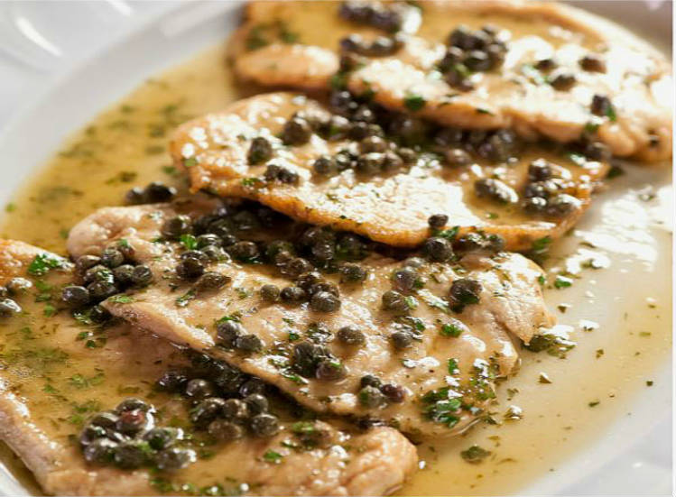

Recetas de cocina
POLLO PICCATA

Ingredientes
- 8 filetes de pechugas de pollo
- 4 cucharadas soperas de harina de trigo
- 2 limones
- 4 cucharadas soperas de mantequilla
- 150 mililitros de vino blanco
- 500 mililitros de caldo
- 1 bote de alcaparras
- 2 dientes de ajo
- 1 chorro de aceite de oliva
- 1 pizca de pimienta
- 1 pizca de sal
¿Cómo hacer Pollo Piccata?
- Salpimienta los filetes de pollo al gusto, coloca la harina en un plato y pasa la carne por ella para rebozarla un poco.
Así, el pollo piccata quedará más jugoso.
- Pon una sartén o cazuela al fuego, añade un chorro de aceite y 2 cucharadas de mantequilla. Cuando esté caliente, dora
los filetes de pollo por los dos lados, sácalos y resérvalos.
- En la misma sartén, y aprovechando lo que ha quedado pegado del pollo, añade una cucharada más de aceite. Pica un par de ajos,
agrégalos a la sartén y deja que cocinar a fuego suave hasta que empiecen a coger color
- Cuando los ajos empiecen a coger color, vierte el vino blanco y deja que se cocine durante 3-4 minutos o hasta que se evapore el
alcohol. Exprime los limones, añade una parte del zumo y un vaso de caldo. Puedes usar caldo de pollo casero o disolver en un vaso
de agua caliente una pastilla de caldo o consomé. Deja que se cocine la salsa durante 10 minutos a fuego medio-bajo. Prueba de sal,
añade un poco más de pimienta si te gusta y decide si te apetece agregar más zumo de limón, ya que la cantidad final dependerá de tu
gusto.
-
Cuando la salsa haya hervido unos minutos, incorpora los filetes de carne y deja que se cocine el pollo piccata durante 3-4 minutos
más. Luego, agrega un puñado de alcaparras y 1-2 cucharadas de mantequilla. Prueba la salsa para ver si está a tu gusto, sobre todo de
limón, ya que si está fuerte puedes aligerarla con un poco de agua.
-
Mueve la cazuela durante 5 minutos para que la salsa se vaya espesando con la harina que lleva el pollo y listo. Si te queda muy ligera
la salsa, pon en un vaso un poco de agua, deshaz una cuchara de harina y añádela. Sirve esta increíble receta de pollo piccata en una
fuente con la salsa y añade un puñado más de alcaparras.